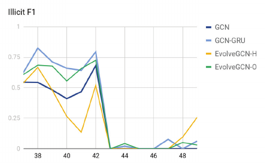

class: center, middle # EvolveGCN: Evolving Graph Convolutional Networks for Dynamic Graphs ### from MIT-IBM Watsin AI Lab, IBM Research, MIT CSAIL #### Speaker: Yueh-Hua Tu ##### 2020.12.20 --- class: middle ## Dynamically evloving network Neural network models generally focus on a sttaic graph, while in real application, often encouter a dynamically evolving graph. Example: social network --- class: middle ## Introducing a recurrent mechanism #### GCN + RNN * Use GNN as a feature extractor and RNN for sequence learning. * Single GNN is learned for all graphs on the temporal axis. -- #### Related works 1. Use GCN to obtain the node embeddings, which are then fed into the LSTM for learning dynamics (Kipf and Welling 2017). 2. Modify the LSTM that takes node features as input but replaces the fully connected layers by graph convolutions (Seo *et al*. 2016). --- class: middle ## Issue of addition/deletion of graph nodes * Require knowledge of the nodes over the whole time span. * Hardly promise the performance on new nodes in the future. * New nodes may emerge after training and appear or disappear frequently. -- #### Challenging * Challenging for RNN to learn the irregular behaviors. --- ## Decoupling temporal relation learning * They proposed to use the RNN to **regulate** the GCN model (i.e. network parameters) * This approach effectively performs **model adaptation**, whch focus on the **model** itself rather than the **node embeddings**. * Change of nodes is irrelevant of learning temporal relationship. -- #### Graph convolutional network where $\hat{A} = \tilde{D}^{-\frac{1}{2}}\tilde{A}\tilde{D}^{-\frac{1}{2}}$ -- #### Weight evolution * The key in this method is the **update of the weight matrix** $W_t^{(l)}$. * The GCN parameters are not trained anymore but computed from the RNN. * Only the RNN parameters are trained. * Model size (number of parameters) does not grow with the number of time steps. --- ## Architecture of EvolveGCN --- ## Evloving graph convolution unit (EGCU) --- ## EGCU-H version -- #### Idea: treat W as the hidden state of the dynamical system --- ## EGCU-O version -- #### Idea: treat W as the output of the dynamical system --- ## Implementation of -H version * Use of standard GRU * Extending the inputs and hidden states from vectors to matrices * Matching the column dimension of the input with that of the hidden state -- #### Extending vectors to matrices * Use the same GRU to process each column of the GCN weight matrix. -- #### Matching the column dimension of the input and the hidden state ``` function Z = summarize(X, k) y = X * p / norm(p) i = top-indices(y, k) Z = (X .* tanh(y))[i] end ``` > github: [IBM/EvolveGCN](https://github.com/IBM/EvolveGCN) --- ## Implementation of -O version * Use of standard LSTM * Extending the inputs and hidden states from vectors to matrices > github: [IBM/EvolveGCN](https://github.com/IBM/EvolveGCN) --- ## Which version to use? * When node features are informative * use -H version * When graph structure plays a important role * use -O version --- class: middle # Experiments --- class: middle ## Datasets --- class: middle ## Link prediction task <img src="../pics/EvolveGCN-4.png" width="100%" style="display: block; margin-left: auto; margin-right: auto;"> * Task: Take information up to time $t$ and predict the existence of edge $(u, v)$ at time $t+1$. * Implementation: Concatenate two node vectors $h_t^u$ and $h_t^v$, and apply an MLP to get the probability. --- class: middle ## Edge classification task <img src="../pics/EvolveGCN-5.png" width="50%" style="display: block; margin-left: auto; margin-right: auto;"> * Task: Predict the label of edge $(u, v)$ at time $t$. * Implementation: Concatenate two node vectors $h_t^u$ and $h_t^v$, and apply an MLP to get the class probability. --- class: middle ## Node classification task  * Task: Predict the label of node $u$ at time $t$. * Implementation: Apply a softmax activation function to $h_t^u$ and get the probability vector. --- class: middle # Thank you for attention #### References * [Pareja, A., Domeniconi, G., Chen, J., Ma, T., Suzumura, T., Kanezashi, H., Kaler, T., Schardl, T., & Leiserson, C. (2020). EvolveGCN: Evolving Graph Convolutional Networks for Dynamic Graphs. Proceedings of the AAAI Conference on Artificial Intelligence, 34(04), 5363-5370.](https://ojs.aaai.org//index.php/AAAI/article/view/5984)